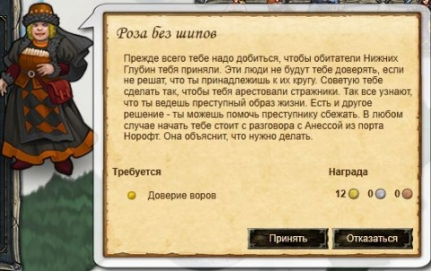
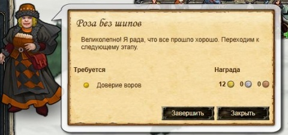

  Начало задания
Начало задания
 Завершение задания
| Получение задания | Энерис Калерон, Торговец, Таверна "Ночной лучник" |
|---|---|
| Нужно для получения |
|
| Место выполнения | Порт Норофт. Таверна "Белая стая", Халмвик |
| Для завершения требуется |
|
| Награда |
|
| Начав квест открывается доступ к: |
|
| Открывает доступ к: |
|
Выполнение
После получения квеста идем в Порт Норофт. Таверна "Белая стая"
У персонажа Анесса Калерон, торговый представитель выполняем квест "Внимание глубин"